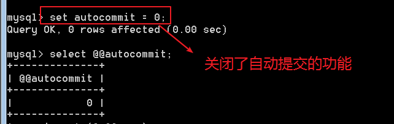

MySql 数据库操作
概述
SQL (Structured Query Language)，结构化查询语言，是数据库系统的通用语言。
数据查询语言(Data Query Language, DQL)
只查询数据，不改变数据库中的数据，命令动词有 Select
数据定义语言(Data Definition Language,DDL)
创建、修改或删除数据库中的各种对象，包括表、视图、索引等。命令动词有 Create Drop Alter
数据操纵语言(Data Manipulation Language,DML)
对数据库中的数据的插入、删除、修改等，命令动词有 insert update delete
数据控制语言(Data Control Language,DCL)
权限管理、控制事务、对数据库进行监视等，命令动词有 grant revoke
库操作
创建数据库
1 | create database 库名 [库选项]; |
库选项，指字符集的设置，可选。
每个库，会对应一个数据目录，存放在当前mysql配置的数据库目录内。

数据库名的问题
大小写，取决于mysql服务器所在的操作系统！（建议是，认为区分大小写）
特殊名称，关键字，特殊字符等，默认是不可以的！
但是，可以使用 反引号(~按键) 将 名称 包裹起来，告知服务器，此处一个名字，而不是特殊操作！
中文等都可以作为标识符（库名），同样需要反引号！（多字节字符，还需要注意字符集的问题）
查看数据库
1 | -- 查看已存在的所有库，复数(s) |
模糊查询1
show databases like '模式';
like 关键字 用于过滤多个数据库，通常与通配符一起使用。
% 匹配任意字符的任意次数（包括0次）的组合_ 匹配任意一个字符
修改数据库
1 | -- 修改数据库选项 |
库选项，指字符集的设置，可选。
删除数据库
1 | -- 删除数据库 |
删除数据库后那么对应的存放数据库的的文件夹也同样被删除！
表操作
创建表
1 | -- 在创建表之前一定要选择指定的数据库： |
1 | -- 创建表 |
其中表名，一定先要确定数据库！因此一个典型的表名是由两部分组成：
所在库.表名
test.itcast test库内itcast表
itcast.stu itcast库内的stu表
但是我们可以使用use设置默认数据库，如果不指定则使用默认数据库（即当前数据库）
在使用 表名 但是没有指明其所在数据库时，默认数据库才会起作用！
字段才是最终的数据的载体（与变量的概念是类似的，都是保存数据的），SQL的是强类型，字段的类型是固定的，提前定义好的！
因此，在定义字段时，至少要字段名 和 字段类型！
两种最基本的mysql数据类型（int， varchar,varchar必须指定最大长度，单位：字符。int可以省略长度）
表选项部分
典型的常用的表选项有：
字符集，表引擎(myisam innodb )
1 | create table my_table( |
查看表
1 | -- 查看当前数据库所有表 |
desc describe 的简写，描述 。
like 关键字 用于过滤多个表，通常与通配符一起使用。
% 匹配任意字符的任意次数（包括0次）的组合_ 匹配任意一个字符
在mysql的命令行客户端，如果数据过多，不容易展示！可以使用 \G 作为语句结束符！

修改表
修改表选项
1 | alter table 表名 [新选项]; |

修改表名
1 | rename table 原表名 to 新表名; |
注意，表名可以由库名.表名 形式的！
因此，可以跨库修改表名，只要在表名前增加 库名即可
修改表结构
增加字段
1 | alter table 表名 add column 字段定义 [字段位置]; |
[字段位置]
如果不指定其位置 添加的字段会默认在该表最后面！
使用关键字 after 字段名 或 使用关键字，first 。如：
1 | -- after 在指定字段的后面 |
修改字段
1 | -- 修改字段的定义，可用 after 或 first 关键字，在后面 |
删除字段
1 | alter table 表名 drop column 字段名; |
字段改名
1 | -- 字段改名 |
删除表
1 | -- 删除表 |
数据操作
增加数据
增加 创建 插入 数据(记录)
1 | -- 插入单条记录 |
table_name 表名column_list 字段列表，逗号分隔，可省略，表示在值列表中要插入所有字段。value_list 值列表，逗号分隔，要与字段对应。column_n 字段nvalue_n 值n
注意：字段与值的数量一定要匹配。数值类型，通常不需要增加引号！ 而字符串类型都需要出现引号内（单引号）。

蠕虫复制
就是在已有的数据的基础之上，将原来的数据进行复制，插入到对应的表中！
语法：insert into 表名(字段列表) select *|字段列表 from 表名;
(字段列表) 可省略，即，数据插入所有字段中。* | 字段列表 可用 * 或 指定字段
注：表名可相同，即本表的数据查询并追加到本表。
1 | -- 蠕虫复制 |
查询数据
查询 检索 数据(记录)
1 | -- 简单的查询语法 |
column_list 字段列表，使用 * 表示 所有字段table_name 表名condition 条件表达式，默认是没有，表示永远为真，建议添加where 1
更新数据
1 | update table_name set column_1=newValue_1, column_n=newValue_n [where condition] |
table_name 表名column_1 字段1newValue_1 新值1condition 条件表达式，可以省略。表示永远为真。
每个字段=值 之间逗号分隔
注意 ：在修改和删除记录的时候一定要加指定的条件！
类似于 删除，也可以使用 order by和 limit确定更新的记录！
删除数据
1 | delete from table_name [where condition]; |
table_name 表名condition 条件表达式，可以省略。表示永远为真，即删除所有记录。
注意，删除是不可逆的。要避免没有条件的删除！
1 | -- delete时，支持 order by 和 limit 来限制删除的数据记录! |
如果清空表，此时可以独立使用truncate语句，完成清空表truncate 表名 先将表给删除，然后再重新创建一张表，即 主键可重置。
通常用于清除测试数据。
1 | truncate stu; |
额外的操作
在 create 与 drop 时，有两个额外的操作：
if not exists如果不存在if exists如果存在
1 | -- 如果不存在则创建 |
1 | -- 选择数据库 |
事务(transaction)
一组 SQL 的集合，要不集体都执行成功，要不集体都失败，指的是，应该生成的影响退回到改组sql执行之前！
往往一个业务逻辑，是由多条语句组合完成！
语法
开启事务： start transaction 可以简写成[ begin]
记录下来，之后所执行的sql！（操作与结果）
提交：commit
如果所有的sql都执行成功，则提交。将sql的执行结果持久化到数据表内！
回滚：rollback
如果存在失败的sql，则需要回滚。将sql的执行结果，退回到事务开始之前
无论 回滚还是提交，都会关闭该事务！（需要再次开启，才能使用）
事务在没有进行提交与回滚之前，只针对当前的 连接生效！如果已经提交或者是回滚那么所有的连接都生效！
开启一个A连接：

让学生表中的李莫愁这个字段的money +1000
提交之后 A连接
开启一个B连接：

事务的基本原理(autocommit)
提交，就会将结果持久化，不提交不会！
如果不开启事务，执行一条sql，马上会持久化数据！
可见，普通的执行，是立即提交！

修改autocommit这个内置变量的值
show variables like 'character-set-%';

因为，默认的mysql对sql语句的执行是自动提交的！

开启事务其实就是，关闭了自动提交的功能！改成了commit执行手动提交！
因此，可以通过简单的对 是否自动提交 加以设置，可以完成开启事务的目的！
自动提交的特征是保存在服务的一个叫做 autocommit的一个变量内的！
使用set 变量名=变量值 的形式就可以完成修改：

注意：==事务类似于外键约束，只被innodb引擎支持！==
事务的特点(ACID)
原子性，一致性，隔离型，持久性
原子性：事务是不可分割的。
一致性：保证数据在 事务的执行周期内，是一致的！
隔离型：多个事务之间的干扰关系！隔离级别！
持久性：事务一旦被提交，就不可能在被回滚！